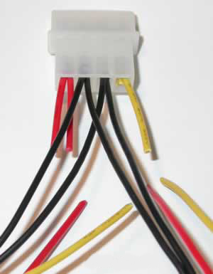
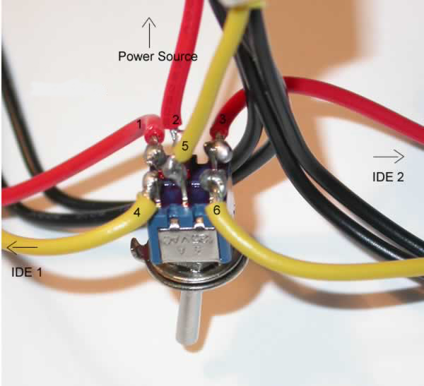
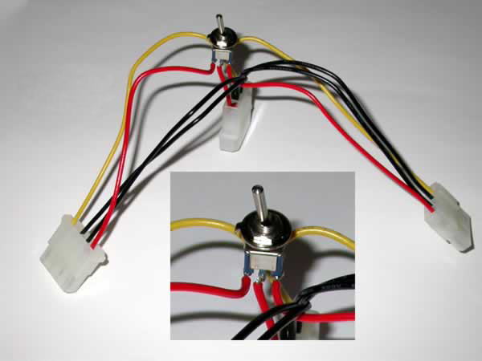
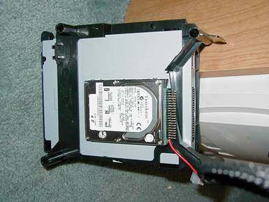
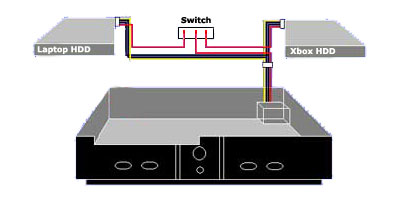

DUAL
HARD DISK UPGRADE
First you need to purchase/get the following items!
1. Laptop IDE Drive
2. Three device IDE cable (4 connectors total), can get this at
CompUSA. It has to be THREE DEVICE IDE CABLE!
3. 44 to 40 pin adapter for IDE laptop hard drive, CompUSA
4. Power cable "Y" adapter.
5. DPDT toggle (or slide, etc) switch.
6. Wire - Preferable same colors using (Red/Yellow/Black)
7. Soldering Iron, Solder and some skill!
8. Velcro or other way to mount Laptop HDD into Xbox.
Begin by snipping the red and yellow wires about one inch from the
connector that has dual wires coming out of it. Then clip one of
the two wires as close to the base as possible, notice there is only
one yellow wire and a nub, do the same to the red. Strip all ends about
a 1/16 of an inch, just enough to make contact on the switch.

This pic shows a mistake!
One of the red wires on the
LEFT side is still there. Look at the yellow on the right,
and you'll see one cut flush with the plastic. Do the same
with the RED wires, leaving only one usable.
The one inch wires you cut, go from the power connector, to the middle
(POLEs) of the switch. Those wires are numbered 2, and 5.

Note that the main power #2 RED and #5 YELLOW go to the Center, or POLE
of the switch.
#1 RED and #4 YELLOW go to power the one HDD when on, other beibg off.
#3 RED and #6 YELLOW go to power the other HDD when on, other being off.
Lets explain how this works real quick; using the yellow wires 4,5,6 as
example. When the switch is toggled in one position 5 makes
contact with 4, when in the other position 5 makes contact with
6. ALSO; The same holds true on the other (red) side of the
switch. So when toggled in one position both 2 and 1 make
contact, and, at the same time 5 and 4 make contact. The voltages
do not cross over ie 4, 5, 6 does not contact 1, 2, or 3.
SWITCH DONE:

You can make this any way you want to! Longer wires from the MAIN
power to the switch
will make is possible to mount the switch wherever you need to.
The way this is done, is the
switch would have to be mounted through the TOP of the Xbox, roughly on
the right-hand side.
Connecting the Drives:
1) Set both of the drives jumpers to Master
2) Connect your 44 to 40 pin adapter to your laptop drive. Mount it
using velcro under the DVD drive. The newer philips drives
have that bulge under them, so find another spot if you have one of
those drives. It should be roughly where pictured below. Beware of
capacitors and other circuits on the motherboard, you do not want any
shorting!!

3) Hook up the 3 device IDE cable and place it all back inside the
xbox. Here is why the cable you bought has to be a 3-IDE device cable: The cable
goes from the motherboard to 1st, the DVD drive, 2nd to the laptop
drive, and 3rd, to the desktop drive. Be sure the "short" end
(the two 8" sections) goes towards the motherboard, for Motherboard to
DVD connection, and the "long" end (the 16" section) goes to the
desktop and laptop drive.
4) Connect your "Y" adapter to the laptop, and the standard hard drive.
Here's what it should look like:

That is just a "depiction" of what it would look like.
Although laptop drives are expensive, you can retain your ORIGINAL HDD
for stock configuration, and switch to the Laptop drive for modded
configuration. OR, with some work, use an old 8-10GB laptop
drive to make a duplicate of your stock drive. You will have to
do that work, which is getting the HDD keys, and using them to lock the
Laptop drive IF it's lockable.
There is a program called XBOXHDM to make an image of your original
HDD, to make another one. You can do that research, but this nice
DUAL HDD modification is great!
SOURCE
<=-Found the information here!